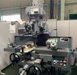

工作機械の代表格：旋盤とフライス盤
金属などの材料を削って目的の形状に加工する「切削工具」の中でも、中心的な役割を果たすのが旋盤（せんばん）とフライス盤です。ここでは両者の仕組みと違いについて解説します。
1. 旋盤とフライス盤の主な特徴
どちらも金属を削る機械ですが、「どちらを回転させるか」が決定的に異なります。
- 旋盤 (Lathe): 材料（ワーク）を回転させ、固定した刃物を当てて削る
- フライス盤 (Milling machine): 刃物（工具）を回転させ、固定した材料に当てて削る
2. 代表的な加工工程
それぞれの機械が得意とする主な加工方法は以下の通りです。
- 旋盤加工：外径削り、穴あけ、ねじ切り、端面加工など（円筒状の加工が得意）
- フライス加工：平面削り、溝掘り、ポケット加工、側面削りなど（角物の加工が得意）
クリックして安全作業上の注意点を見る
高速で材料や工具が回転するため、作業時は保護メガネを着用し、巻き込まれ防止のため手袋の着用は厳禁（または指示に従う）です。

3. 関連リンク・さらに学ぶ
工作機械の規格や基礎知識について深く知りたい方は、以下の外部サイトも参照してください。
* 日本工作機械工業会 公式サイト
* 日本産業規格（JIS）WEBサイト